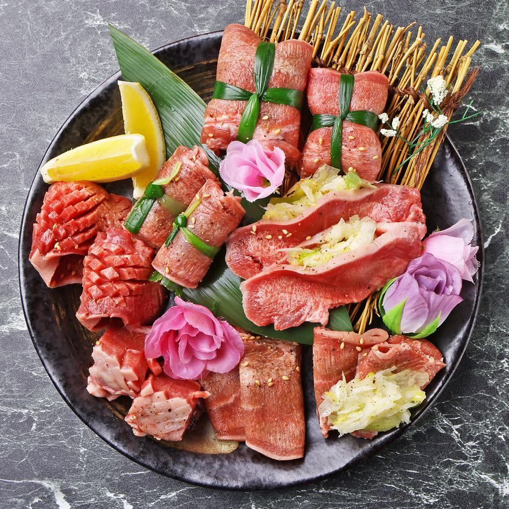
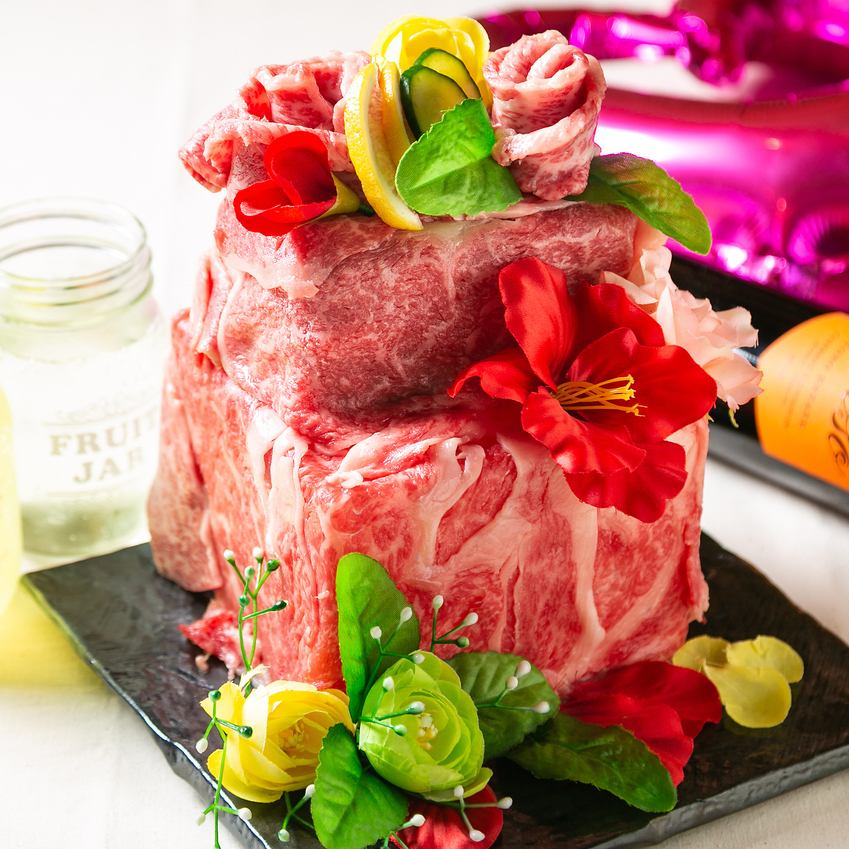
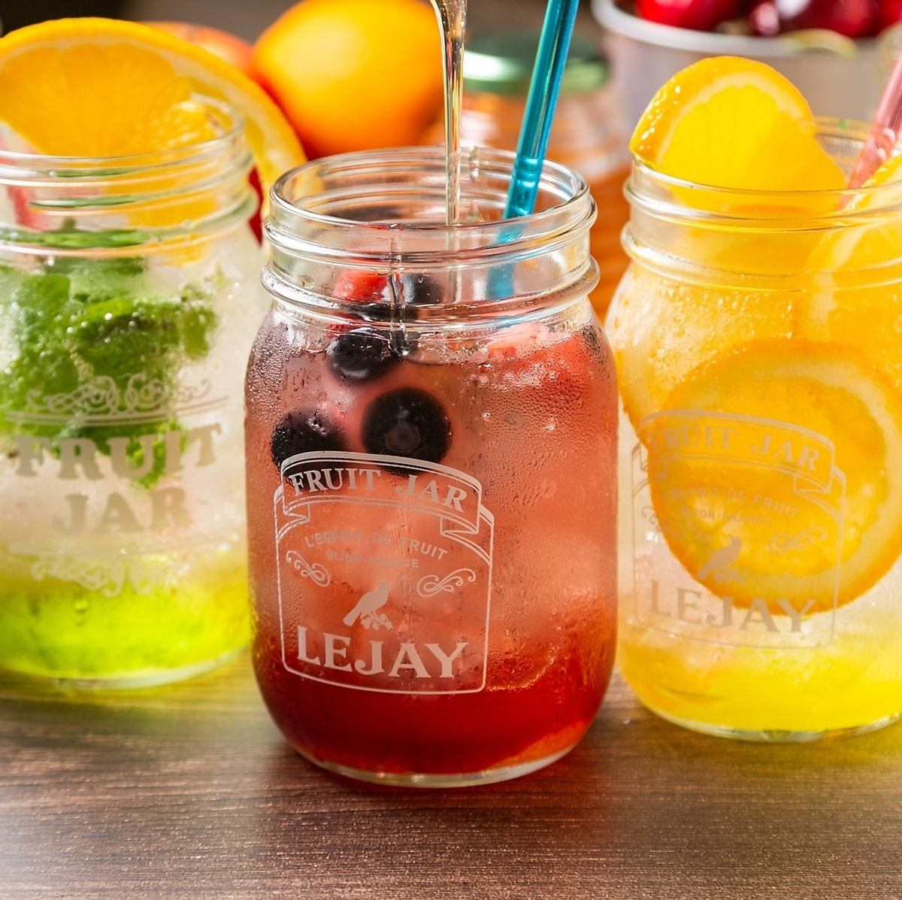
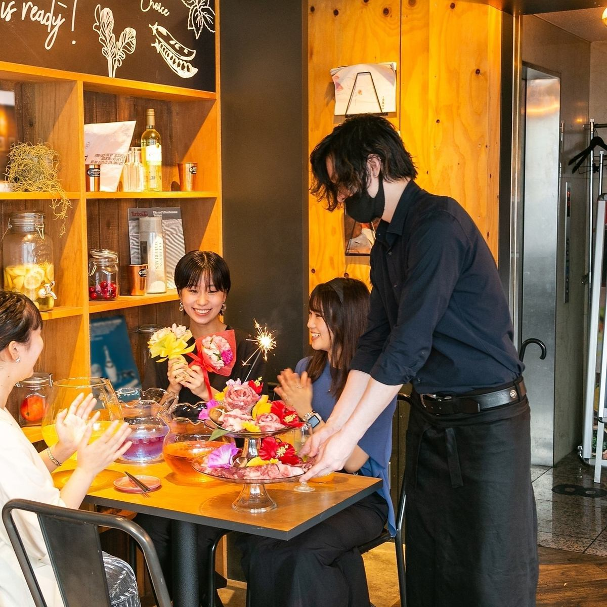
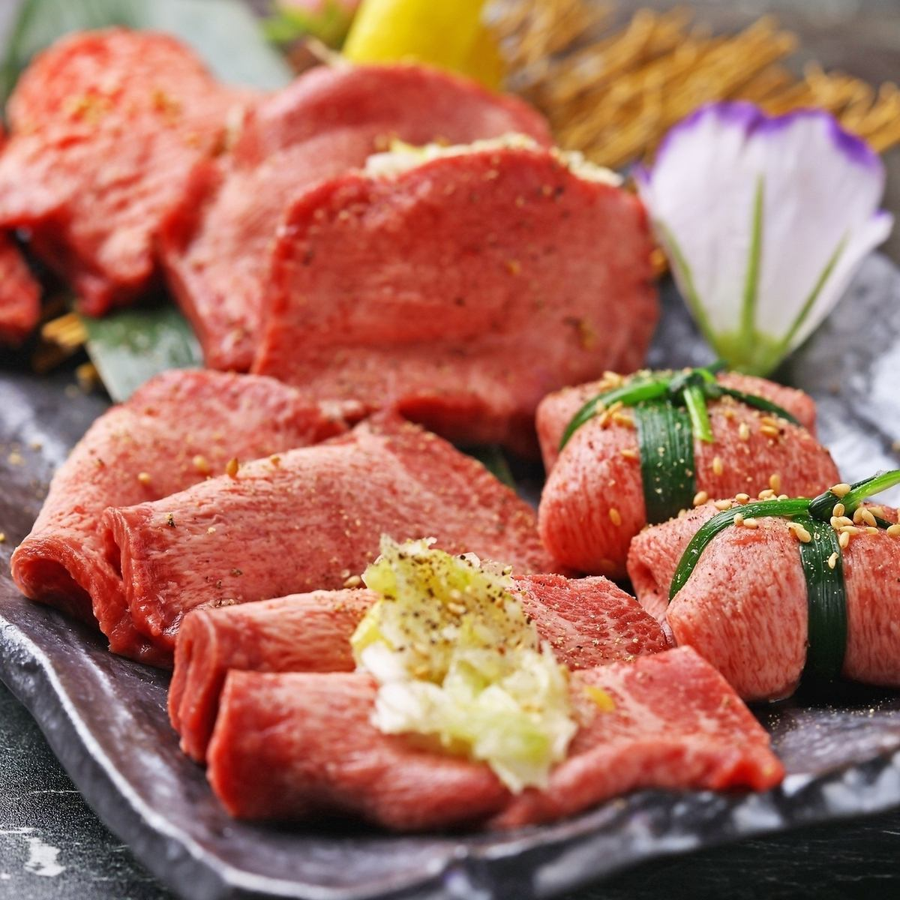
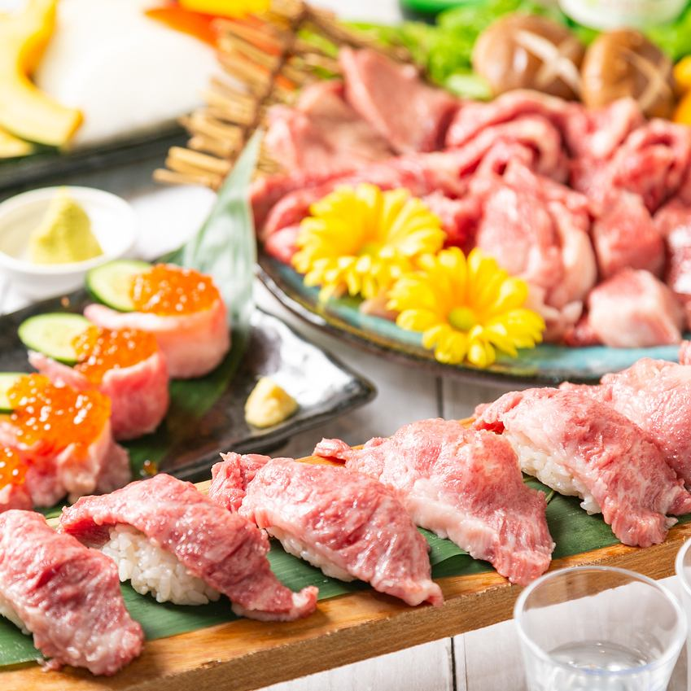
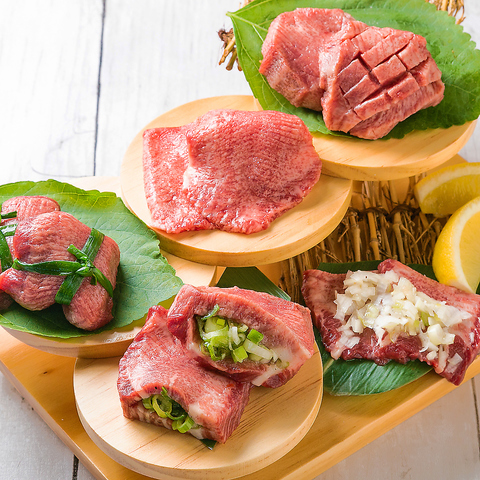
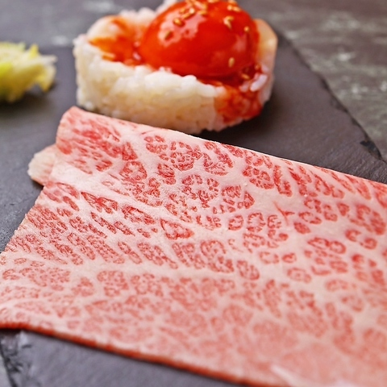
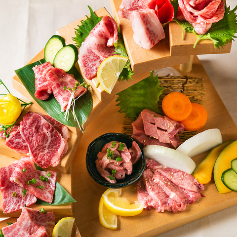

Galerie photos









Kevin, Loïc, May Nhia, Stéphanie, Estelle
Du 5 Avril au 27 Avril 2026
Adresse yakiniku à volonté juste à côté de la gare de Tennoji, pratique pour un repas en groupe avec réservation en ligne.









Yakiniku Jack Tennoji est une option simple pour 5 personnes : emplacement très central (Tennoji), formule à volonté mise en avant sur le site officiel, réservation en ligne immédiate et grande capacité de salle.
Conversion indicative sur base 1 EUR = 183.02 JPY (BCE du 04/03/2026). Taux variable.